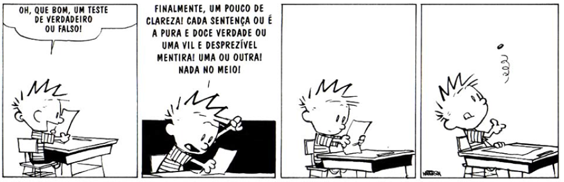

Sobre uma sociedade binária1
Este texto foi originalmente publicado em meu blog anterior "economiaSG", no dia 25 de Novembro de 2017. Alguns textos desta primeira experiência com blogs foram republicados aqui e podem ser encontrados na categoria "economiaSG".
Em uma manhã destas estava em uma aula e meu professor fez uma pergunta que ressuscitou este raciocínio antigo: criamos uma sociedade sem capacidade de criticar. Isto significa que só acreditamos (sociedade) naquilo que nos é repassado e, como externalidade deste processo ao longo de nossas vidas, passamos a demandar que verdades nos sejam repassadas.
Não é meu objetivo fazer um tratado filosófico disso tudo, nem sou capaz de fundamentar o que estou escrevendo em uma bibliografia da área. Só estou externalizando estes pensamentos na esperança de produzir questionamentos ou reflexões. Apesar disto posso assumir que este raciocínio vem de algumas leituras, de Bachelard (1996) e de um livro sobre filosofia científica (PORTOCARRERO, 1994) que instigaram este conceito do que é verdade e do que não é (ironicamente). De fato, até onde fui capaz de acompanhar, a verdade em si não existe. Ela é apenas um consenso (PORTOCARRERO, 1994). Da mesma forma que em um tempo passado era consenso que a terra era plana, hoje há um consenso de que ela é redonda (geodésica). Nada impede que daqui duzentos ou trezentos anos este pensamento seja considerado obsoleto e de que uma nova verdade seja estabelecida. Isto pode acontecer por consenso científico, ou por outro grupo que detenha o poder de “gerenciar” a verdade. Não custa lembrar que no tempo da terra plana quem tinha este poder era a igreja, Copérnico e Galileu que o digam. Hoje a ciência exerce este poder, mas não significa que ela o fará sempre, ou ainda que ela sempre cumprirá com seu propósito “puramente científico”. Isto é um pouco do que Bachelard (1996) fala em seu livro sobre o espírito científico.
Enfim, não queria ter me estendido demais neste embasamento da ideia de verdade, mas verdade seja dita, era tão necessário quanto este trocadilho. Agora, retomando o meu argumento a respeito da externalidade em torno da reprodução da verdade. Acho que a confusão toda começa a partir da necessidade de amplo acesso ao ensino. Este nunca será o problema, ele é apenas o catalisador. Para tanto é necessário aceitar, ou pressupor, que este sistema de ensino foi introduzido como um modo de produção, em resposta a necessidade de uma população melhor educada para desempenhar as novas tarefas de uma sociedade urbana e industrial. Antes disto só estudava quem não tinha vocação para o trabalho, ou desejava integrar a igreja. Pois bem, para ampliar o acesso a educação foi utilizado o mesmo sistema utilizado para ampliar a produção: escala. Tirei este entendimento de Toffler (1980).
Para se produzir conhecimento em escala não é possível questionar, pois isto leva tempo e não é um tempo uniforme para todos. Além disto, pacotes de conhecimentos são repassados de forma escalonada. Para saber se estes pacotes foram absorvidos os alunos são testados, se passarem pelo teste de qualidade avançam para o próximo nível, se não, retornam ao processo inicial (felizmente não chegamos ao extremo de descartá-los, ou será que chegamos?). Ao mesmo tempo há um projeto de desenvolvimento pessoal estabelecido: educação fundamental, média, superior e pós-graduação. Em todas estas etapas o indivíduo é submetido a provas para se certificar de que ele detém os conhecimentos (verdades) necessárias. Evitando juízo de valor, mas perceba que o sistema não dá brechas para criticidade. Pode-se imaginar que haveria este espaço na graduação e na pós-graduação, mas, mais uma vez, as pressões - de currículo ou sociais - são para que se termine a etapa de capacitação e entre na etapa produtiva (trabalhar!!).

Note que isto é uma imposição do sistema e que isto ainda não é a externalidade de que estou falando. A externalidade de que estou falando diz respeito ao fato de que os avaliadores das etapas deste processo (os professores em geral) foram, por definição, bem sucedidos neste mesmo processo. O que implica que eles sejam reprodutores de verdades dadas. Em outra medida, o sistema que produz os indivíduos desta sociedade, torna como bem sucedidos (dentro do sistema) os “consumidores” de verdades, pois não há estímulo para o contrário.
Resultado é um pouco do que acompanhamos nas intermináveis discussões de Facebook e redes sociais afora: uma polarização de ideias. Cada qual com as suas verdades, impondo uns aos outros a que seria a verdade absoluta, sem tentar chegar a um acordo, ou relativizar os pontos de discussão.
Referências
BACHELARD, Gaston. A formação do espírito científico. Rio de janeiro: Contraponto, p. 77, 1996.
PORTOCARRERO, Vera. Filosofia, história e sociologia das ciências I: abordagens contemporâneas. SciELO-Editora FIOCRUZ, 1994.
TOFFLER, Alvin; TAVORA, JOÃO. A terceira onda. 1980.